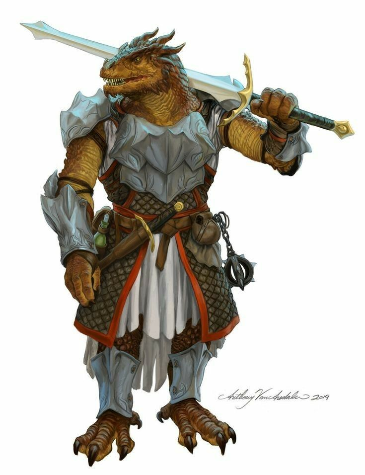
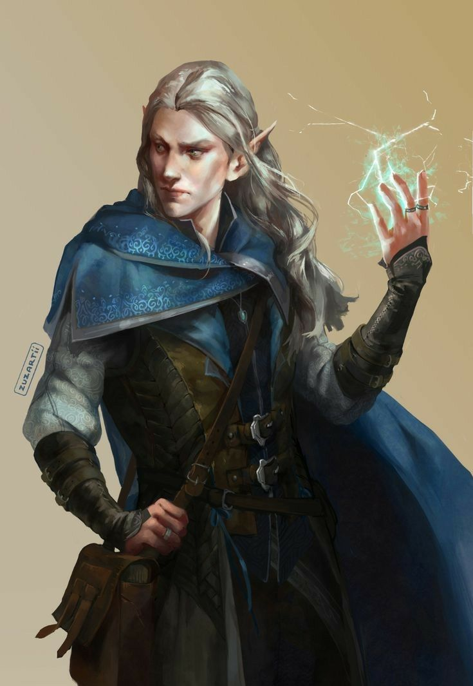
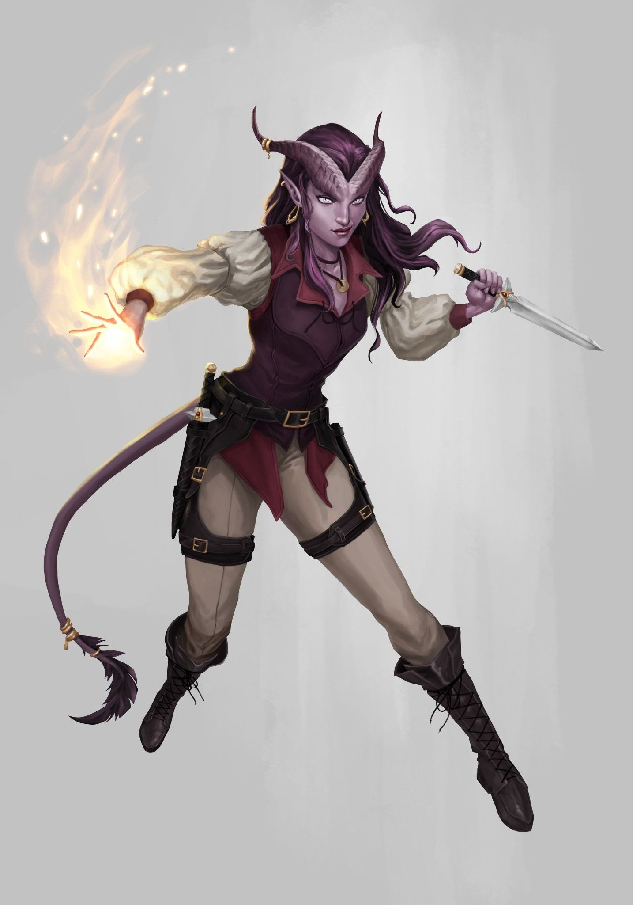

RAÇAS
Diversas culturas e sociedades povoam o mundo de Dungeons & Dragons; algumas são formadas
por humanos, mas existem outras que são compostas por raças fantásticas, como elfos, anões e
tieflings. Os aventureiros e heróis podem surgir dentre esses vários povos. A raça escolhida
fornece ao personagem um conjunto básico de vantagens e habilidades especiais. Se optar por
um guerreiro, seu personagem será um anão matador de monstros muito teimoso, uma graciosa
elfa com domínio da esgrima ou um obstinado gladiador draconato? Caso escolha um mago, ele
será um corajoso humano mercenário ou um astuto tiefling conjurador? A raça não afeta
somente os valores de atributo e os poderes do personagem, mas também fornece as primeiras
pistas para construir sua história.


ANÕES
Esculpidos nas fundações rochosas do universo, os anões suportaram uma era de servidão aos
gigantes antes de conquistar sua liberdade. Suas poderosas cidades-fortalezas nas montanhas
testemunharam o poder dos seus impérios ancestrais. Mesmo os que vivem nas cidades humanas estão
entre os mais fervorosos defensores, combatendo as trevas que ameaçam engolfar o mundo.
Jogue com um anão se você quiser:
Ser robusto, severo e poderoso como uma rocha,
Trazer glória para os seus ancestrais ou servir como o braço direito de seu deus.
Ser capaz de suportar os piores castigos e
Pertencer a uma raça que privilegia as classes paladino, clérigo e guerreiro.

DDRACONATOS
Nascidos para lutar, os draconatos pertencem a uma raça de mercenários, soldados e aventureiros.
Há muito tempo, seu império batalhou para dominar o mundo, mas agora restam somente alguns clãs
exilados destes guerreiros honrados para transmitir as lendas de sua glória ancestral.
Jogue com um draconato se você quiser:
Ter aparência dracônica.
Ser um herdeiro orgulhoso de um império ancestral arruinado,
Soprar rajadas ácidas, congelantes, flamejantes, elétricas ou venenosas e
Pertencer a uma raça que privilegia as classes senhor da guerra , guerreiro e paladino.

ELFOS
Livres e selvagens, os elfos protegem suas florestas utilizando furtividade e disparando flechas
mortíferas em meio às árvores. Eles constroem seus lares em plena harmonia com a natureza, com
tanta perfeição que os viajantes muitas vezes não percebem que invadiram uma comunidade élfica
até ser tarde demais.
Jogue com um elfo se você quiser:
Ser rápido, silencioso e selvagem,
Liderar seus companheiros pelo coração das florestas e alvejar seus inimigos com flechas e
Pertencer a uma raça que privilegia as classes patrulheiro, ladino e clérigo.

GNOMOS
No RPG de D&D, gnomos são uma das raças centrais disponíveis como personagens dos jogadores. São
mais tolerantes com outras raças, se comparados aos anões, e com a magia, além de serem
habilidosos com ilusões.
Jogue com um elfo se você quiser:
dar uma cabeçada no joelho dos seus inimigos

HALFILINGS
Os halflings compõem uma raça de pequeninos, conhecidos por sua inventividade, raciocínio rápido
e nervos de aço. Eles são um povo nômade, que vaga pelos cursos de água e terras pantanosas.
Nenhuma outra raça viajou mais longe do que os halflings para ver o que acontece no mundo.
Jogue com um halfling se você quiser...
Ser um herói impetuoso que é facilmente subestimado,
Ser agradável, ingênuo e amigável e
Pertencer a uma raça que privilegia as classes ladino, patrulheiro e bruxo .
HUMANOS
De todas as raças civilizadas, os humanos são os mais adaptáveis e heterogêneos. É possível
encontrar povoados humanos em quase todo lugar, e a moral, costumes e interesses dessa raça
variam amplamente.
Jogue com um humano se você quiser:
Ser voce mesmo '-'

MEIO ELFO
Descendentes de humanos e elfos, os meio-elfos são uma raça muito importante que geralmente
combina as melhores características dos elfos e dos humanos.
Jogue com um meio-elfo se você quiser:
um elfo e um humano mas não sabe escolher
